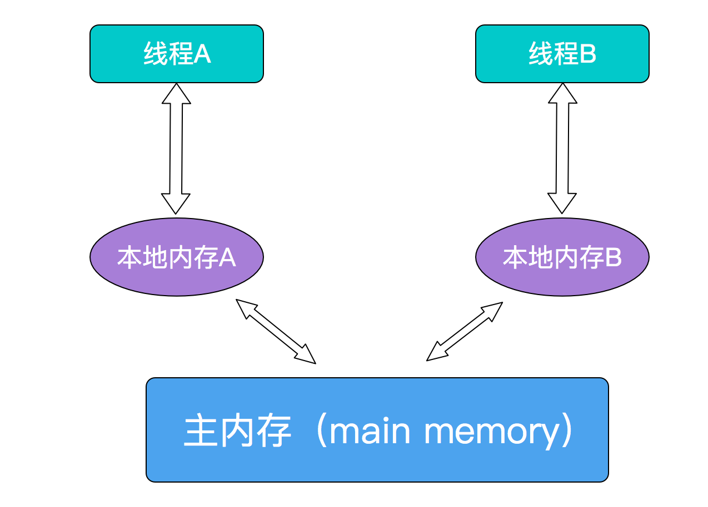

Java中的volatile
内存可见性
volatile是Java提供的一种轻量级的同步机制，在并发编程中，它也扮演着比较重要的角色。同synchronized相比（synchronized通常称为重量级锁），volatile更轻量级。
public class TestVolatile {
boolean status = false;
/**
* 状态切换为true
*/
public void changeStatus(){
status = true;
}
/**
* 若状态为true，则running。
*/
public void run(){
if(status){
System.out.println("running....");
}
}
}
上面这个例子，在多线程环境里，假设线程A执行changeStatus()方法后,线程B运行run()方法，可以保证输出”running…..”吗？
答案是NO!
这个结论会让人有些疑惑，可以理解。因为倘若在单线程模型里，先运行changeStatus方法，再执行run方法，自然是可以正确输出”running….”的；但是在多线程模型中，是没法做这种保证的。因为对于共享变量status来说，线程A的修改，对于线程B来讲，是”不可见”的。也就是说，线程B此时可能无法观测到status已被修改为true。那么什么是可见性呢？
所谓可见性，是指当一条线程修改了共享变量的值，新值对于其他线程来说是可以立即得知的。很显然，上述的例子中是没有办法做到内存可见性的。
Java内存模型
java虚拟机有自己的内存模型（Java Memory Model，JMM），JMM可以屏蔽掉各种硬件和操作系统的内存访问差异，以实现让java程序在各种平台下都能达到一致的内存访问效果。
JMM决定一个线程对共享变量的写入何时对另一个线程可见，JMM定义了线程和主内存之间的抽象关系：共享变量存储在主内存(Main Memory)中，每个线程都有一个私有的本地内存（Local Memory），本地内存保存了被该线程使用到的主内存的副本拷贝，线程对变量的所有操作都必须在工作内存中进行，而不能直接读写主内存中的变量。这三者之间的交互关系如下

#
需要注意的是，JMM是个抽象的内存模型，所以所谓的本地内存，主内存都是抽象概念，并不一定就真实的对应cpu缓存和物理内存。当然如果是出于理解的目的，这样对应起来也无不可。
大概了解了JMM的简单定义后，问题就很容易理解了，对于普通的共享变量来讲，比如我们上文中的status，线程A将其修改为true这个动作发生在线程A的本地内存中，此时还未同步到主内存中去；而线程B缓存了status的初始值false，此时可能没有观测到status的值被修改了，所以就导致了上述的问题。那么这种共享变量在多线程模型中的不可见性如何解决呢？比较粗暴的方式自然就是加锁，但是此处使用synchronized或者Lock这些方式太重量级了，有点炮打蚊子的意思。比较合理的方式其实就是volatile
volatile具备两种特性，第一就是保证共享变量对所有线程的可见性。将一个共享变量声明为volatile后，会有以下效应：
当写一个volatile变量时，JMM会把该线程对应的本地内存中的变量强制刷新到主内存中去；
这个写会操作会导致其他线程中的缓存无效。
上面的例子只需将status声明为volatile，即可保证在线程A将其修改为true时，线程B可以立刻得知。
留意复合类操作
但是需要注意的是，我们一直在拿volatile和synchronized做对比，仅仅是因为这两个关键字在某些内存语义上有共通之处，volatile并不能完全替代synchronized，它依然是个轻量级锁，在很多场景下，volatile并不能胜任。看下这个例子：
package test;
import java.util.concurrent.CountDownLatch;
/**
* Created by chengxiao on 2017/3/18.
*/
public class Counter {
public static volatile int num = 0;
//使用CountDownLatch来等待计算线程执行完
static CountDownLatch countDownLatch = new CountDownLatch(30);
public static void main(String []args) throws InterruptedException {
//开启30个线程进行累加操作
for(int i=0;i<30;i++){
new Thread(){
public void run(){
for(int j=0;j<10000;j++){
num++;//自加操作
}
countDownLatch.countDown();
}
}.start();
}
//等待计算线程执行完
countDownLatch.await();
System.out.println(num);
}
}
执行结果：224291
针对这个示例，如果用volatile修饰的共享变量可以保证可见性，那么结果不应该是300000么?
问题就出在num++这个操作上，因为num++不是个原子性的操作，而是个复合操作。我们可以简单讲这个操作理解为由这三步组成:
- 读取
- 加一
- 赋值
所以，在多线程环境下，有可能线程A将num读取到本地内存中，此时其他线程可能已经将num增大了很多，线程A依然对过期的num进行自加，重新写到主存中，最终导致了num的结果不合预期，而是小于30000。
解决num++操作的原子性问题
针对num++这类复合类的操作，可以使用java并发包中的原子操作类原子操作类是通过循环CAS的方式来保证其原子性的。
/**
* Created by chengxiao on 2017/3/18.
*/
public class Counter {
//使用原子操作类
public static AtomicInteger num = new AtomicInteger(0);
//使用CountDownLatch来等待计算线程执行完
static CountDownLatch countDownLatch = new CountDownLatch(30);
public static void main(String []args) throws InterruptedException {
//开启30个线程进行累加操作
for(int i=0;i<30;i++){
new Thread(){
public void run(){
for(int j=0;j<10000;j++){
num.incrementAndGet();//原子性的num++,通过循环CAS方式
}
countDownLatch.countDown();
}
}.start();
}
//等待计算线程执行完
countDownLatch.await();
System.out.println(num);
}
}
执行结果:300000
禁止指令重排序
volatile还有一个特性：禁止指令重排序优化。
重排序是指编译器和处理器为了优化程序性能而对指令序列进行排序的一种手段。但是重排序也需要遵守一定规则：
1.重排序操作不会对存在数据依赖关系的操作进行重排序。
比如：a=1;b=a; 这个指令序列，由于第二个操作依赖于第一个操作，所以在编译时和处理器运行时这两个操作不会被重排序。
2.重排序是为了优化性能，但是不管怎么重排序，单线程下程序的执行结果不能被改变
比如：a=1;b=2;c=a+b这三个操作，第一步（a=1)和第二步(b=2)由于不存在数据依赖关系，所以可能会发生重排序，但是c=a+b这个操作是不会被重排序的，因为需要保证最终的结果一定是c=a+b=3。
重排序在单线程模式下是一定会保证最终结果的正确性，但是在多线程环境下，问题就出来了，来开个例子，我们对第一个TestVolatile的例子稍稍改进，再增加个共享变量a。
public class TestVolatile {
int a = 1;
boolean status = false;
/**
* 状态切换为true
*/
public void changeStatus(){
a = 2;//1
status = true;//2
}
/**
* 若状态为true，则running。
*/
public void run(){
if(status){//3
int b = a+1;//4
System.out.println(b);
}
}
}
假设线程A执行changeStatus后，线程B执行run，我们能保证在4处，b一定等于3么？
答案依然是无法保证！也有可能b仍然为2。上面我们提到过，为了提供程序并行度，编译器和处理器可能会对指令进行重排序，而上例中的1和2由于不存在数据依赖关系，则有可能会被重排序，先执行status=true再执行a=2。而此时线程B会顺利到达4处，而线程A中a=2这个操作还未被执行，所以b=a+1的结果也有可能依然等于2。
使用volatile关键字修饰共享变量便可以禁止这种重排序。若用volatile修饰共享变量，在编译时，会在指令序列中插入内存屏障来禁止特定类型的处理器重排序